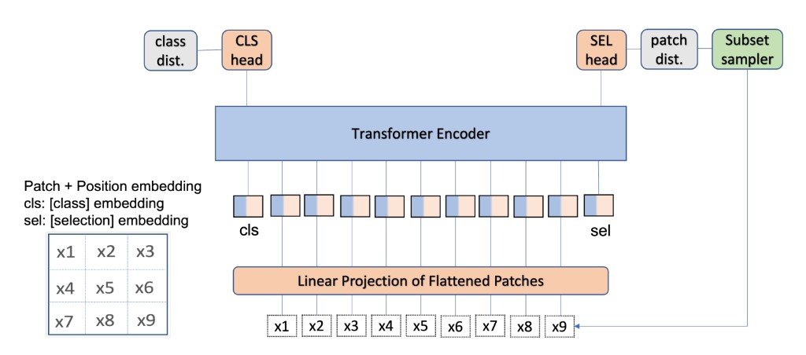

|
Subash Khanal, PhD I have a PhD in Computer Science from Washington University in St. Louis, where I worked in the Multimodal Vision Research Laboratory led by Dr. Nathan Jacobs.Broadly, I am interested in building scalable AI systems that bridge multiple modalities to address real-world challenges. Email / CV / Google Scholar / Linkedin / Github |
{kind=link}
ResearchMy research focuses on multimodal self-supervised learning and generative AI. I build models that integrate satellite imagery, audio, and text, and curate large-scale datasets to support applications in geospatial AI, medicine, and ecology. |
Selected PublicationsFor a complete list, see my Google Scholar profile. |

|
PRUE: A Practical Recipe for Field Boundary Segmentation at Scale
Muhawenayo Gedeon*, Robinson Caleb*, Khanal Subash*, Fang Zhanpei*, Corley Isaac, Wollam Alexander, Gao Tianyi, Strnad Leonard, Avery Ryan, Estes Lyndon, Tárano Ana M., Jacobs Nathan and Kerner Hannah CVPR, 2026 (*Equal Contribution) arxiv / bibtex / code We conduct the first systematic evaluation of segmentation and geospatial foundation models for global field boundary delineation using the Fields of The World (FTW) benchmark. We propose PRUE, combining a U-Net backbone, composite loss functions, and targeted data augmentations to achieve 76% IoU and 47% object-F1 on FTW, surpassing the previous baseline by 6% and 9% respectively. |

|
Sat2Sound: A Unified Framework for Zero-Shot Soundscape Mapping
Khanal Subash, Sastry Srikumar, Dhakal Aayush, Ahmad Adeel, Stylianou Abby and Jacobs Nathan CVPRW (EarthVision), 2026 arxiv / demo video / bibtex / code A state-of-the-art soundscape mapping framework that leverages a Vision-Language Model (VLM) to enrich the semantic understanding of a location's soundscape, learns a shared codebook for fine-grained alignment, and enables retrieval-based, location-conditioned soundscape generation. |

|
ProM3E: Probabilistic Masked MultiModal Embedding Model for Ecology
Sastry Srikumar, Khanal Subash, Dhakal Aayush, Lin Jiayu, Cher Dan, Jarosz Phoenix and Jacobs Nathan CVPR, 2026 arxiv / bibtex / code / project page ProM3E is a probabilistic masked multimodal embedding model for any-to-any generation of multimodal representations for ecology. It learns to infer missing modalities given a few context modalities and proposes a novel cross-modal retrieval approach that mixes inter-modal and intra-modal similarities to achieve superior performance across all retrieval tasks. |

|
SimLBR: Learning to Detect Fake Images by Learning to Detect Real Images
Dhakal Aayush, Khanal Subash, Sastry Srikumar, Arndt Jacob, Dias Philipe Ambrozio, Lunga Dalton and Jacobs Nathan CVPR, 2026 arxiv / bibtex SimLBR is a simple and efficient framework for fake image detection using Latent Blending Regularization (LBR). By learning a tight decision boundary around the real image distribution and treating the fake category as a sink class, it significantly improves cross-generator generalization, achieving up to +24.85% accuracy and +69.62% recall on the challenging Chameleon benchmark. |

|
Global and Local Entailment Learning for Natural World Imagery
Sastry Srikumar, Dhakal Aayush, Xing Eric, Khanal Subash and Jacobs Nathan ICCV, 2025 arxiv/ project page/ bibtex We introduce Radial Cross-Modal Embeddings (RCME), a framework for learning hierarchical vision-language representations that explicitly models transitivity-enforced entailment. Applied to the Tree of Life taxonomy, our model achieves state-of-the-art performance on hierarchical species classification and image-text retrieval tasks. |

|
Mixed-View Panorama Synthesis using Geospatially Guided Diffusion
Xiong Zhexiao, Xing Xin, Workman Scott, Khanal Subash, Jacobs Nathan TMLR, 2025 arxiv / project page / bibtex We introduce mixed-view panorama synthesis — generating a novel ground-level panorama conditioned on a satellite image and a set of nearby panoramas. Our diffusion-based model with geospatially-guided attention handles sparse or distant panorama inputs and consistently outperforms cross-view and same-view synthesis baselines. |

|
RANGE: Retrieval Augmented Neural Fields for Multi-Resolution Geo-Embeddings
Dhakal Aayush, Sastry Srikumar, Khanal Subash, Ahmad Adeel, Xing Eric and Jacobs Nathan CVPR, 2025 arxiv / bibtex We propose a novel retrieval-augmented strategy for multi-resolution geo-embeddings, called RANGE. Our method is based on the intuition that the visual features of a location can be estimated by aggregating visual features from multiple similar-looking locations. |
|
|
TaxaBind: A Unified Embedding Space for Ecological Applications
Sastry Srikumar, Khanal Subash, Dhakal Aayush, Ahmad Adeel and Jacobs Nathan WACV, 2025 (Oral Presentation) arxiv / bibtex / code / project page TaxaBind is a suite of multimodal models useful for downstream ecological tasks covering six modalities: ground-level image, geographic location, satellite image, text, audio, and environmental features. |

|
LD-SDM: Language-Driven Hierarchical Species Distribution Modeling
Sastry Srikumar, Xin Xing, Dhakal Aayush, Khanal Subash, Ahmad Adeel, and Jacobs Nathan CV4E Workshop, ICCV, 2025 arxiv / bibtex We introduce a language-driven approach for hierarchical species distribution modeling (SDM) that uses an LLM to encode species representations from taxonomic descriptions. This enables range map prediction at multiple taxonomic levels and zero-shot generalization to unseen species. |

|
PSM: Learning Probabilistic Embeddings for Multi-scale Zero-Shot Soundscape Mapping
Khanal Subash, Xing Eric, Sastry Srikumar, Dhakal Aayush, Xiong Zhexiao, Ahmad Adeel and Jacobs Nathan ACM Multimedia, 2024 arxiv / bibtex / code / project page We develop a probabilistic, multi-scale, and metadata-aware embedding space that connects audio, text, and overhead imagery. This enables the creation of dynamic, multi-scale soundscape maps for any geographic region, along with uncertainty estimates for the mapping. |

|
Sat2Cap: Mapping Fine-Grained Textual Descriptions from Satellite Images
Dhakal Aayush, Ahmad Adeel, Khanal Subash, Sastry Srikumar, Kerner Hannah and Jacobs Nathan CVPRW (EarthVision), 2024, Best Paper Award arxiv / bibtex / code We propose Sat2Cap, a contrastive learning framework that aligns satellite imagery with fine-grained textual descriptions of locations. Trained on a novel large-scale dataset, it enables zero-shot geospatial mapping driven by free-form text queries. |

|
GeoSynth: Contextually-Aware High-Resolution Satellite Image Synthesis
Sastry Srikumar, Khanal Subash, Dhakal Aayush, and Jacobs Nathan CVPRW (EarthVision), 2024 arxiv / bibtex / code / project page GeoSynth is a diffusion-based model for synthesizing high-resolution satellite images with global style control via text prompts or geographic location, and image-driven layout control via OpenStreetMap data. It exhibits strong zero-shot generalization and produces diverse, geographically consistent satellite imagery. |

|
BirdSAT: Cross-View Contrastive Masked Autoencoders for Bird Species Classification and Mapping
Sastry Srikumar, Khanal Subash, Dhakal Aayush, Di Huang and Jacobs Nathan WACV, 2024 arxiv / bibtex / code BirdSAT unifies cross-view contrastive learning and masked autoencoders to jointly learn from paired ground-level bird images and satellite imagery. The resulting model supports both fine-grained bird species classification and geographic species distribution mapping. |

|
Learning Tri-modal Embeddings for Zero-Shot Soundscape Mapping
Khanal Subash, Sastry Srikumar, Dhakal Aayush and Jacobs Nathan BMVC, 2023 arxiv / supplementary / bibtex / code We learn a tri-modal embedding space between audio, text and overhead imagery. This enables us to create soundscape maps over any geographic region, using either audio or textual queries. |
|
 |
Causality for inherently explainable transformers: CAT-XPLAIN
Khanal Subash, Brodie Benjamin, Xing Xin, Lin Ai-Ling and Jacobs Nathan CVPR Workshop, 2022 arxiv / bibtex / code We introduce CAT-XPLAIN, an inherently interpretable Vision Transformer that adds a causal selection token trained to identify the most causally significant image patches for the classification decision, eliminating the need for post-hoc explainers while maintaining strong task performance. |
|
This website is modified from source code of John Barron's website. |